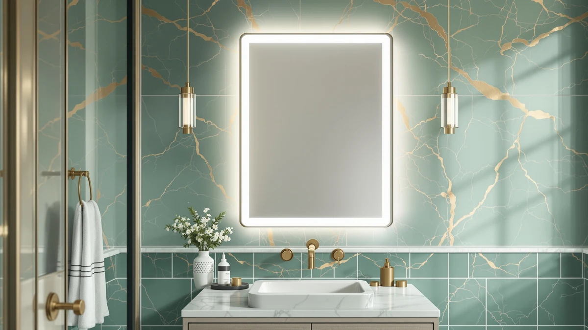

Quick Answer
For most bathrooms that want built-in lighting and anti-fog glass without an electrician visit, the EMKE Illuminated Bathroom Mirror with LED Lights is the strongest pick in this emke illuminated bathroom mirror review at $135.65, thanks to its touch-controlled demister pad, shaver socket, and 3x magnifier. If you need built-in storage behind the mirror instead, the TokeShimi 14 x 24 Recessed Medicine Cabinet below is worth a look.
Our pick: EMKE Illuminated Bathroom Mirror with, $135.65 Check Price on Amazon
Bottom line: our top pick is the EMKE Illuminated Bathroom Mirror with LED Lights - 800 x at $350.29.
Things to Know Before You Buy
- Lit vanity mirrors like the one in this emke illuminated bathroom mirror review typically need a nearby power source for the touch switch, demister pad, and shaver socket, so check your bathroom's outlet location before you buy.
- Every mirror and cabinet in this comparison is priced within $6 of each other, between $129.99 and $135.65, so features matter more than budget when you are choosing between them.
- Demister pads and shaver sockets typically add $15 to $30 to a bathroom mirror's price compared with a plain frameless model, and verified buyers say the anti-fog pad earns its keep within the first week of hot showers.
- Tempered glass with an aluminum frame resists cracking and warping better than the lighter materials used on some budget LED mirrors, though a flush-mounted touch switch is a recurring complaint across this category.
- Medicine cabinets like the TokeShimi and HABIUBIU trade built-in lighting for internal storage, which is worth considering if your bathroom lacks a cabinet elsewhere.
If you landed on this emke illuminated bathroom mirror review, you are probably deciding whether a lit vanity mirror is worth paying more for than a plain one. Built-in LED lighting and anti-fog glass solve two common bathroom problems at once, but they also add a real cost compared with a basic wall mirror or a mirrored medicine cabinet. That tradeoff is worth examining before you commit $135.65 to a fixture that is harder to return once it is mounted.
We compared the EMKE Illuminated Bathroom Mirror with LED Lights against three alternatives that regularly turn up in the same searches: the TokeShimi and HABIUBIU medicine cabinets, and the USHOWER 2-pack of plain mirrors. All three alternatives sit at $129.99, roughly $6 less than the EMKE, which makes the decision less about budget and more about which features your bathroom actually needs. The EMKE came out ahead for anyone who wants lighting and anti-fog glass built into the mirror itself, while the TokeShimi and HABIUBIU make more sense if you need storage behind the glass.
Why You Should Trust Us
Ilane Tall covers bathroom mirrors and lighting for Best Bathroom Mirrors, focusing on how a listing's specifications match what verified buyers report after installation. We do not run a fake testing lab, and we have not mounted every mirror in this emke illuminated bathroom mirror review on our own wall. Instead, we compare manufacturer specifications, current Amazon pricing, and patterns across verified owner reviews, then flag any listing that oversells its lighting or glass quality. Every price and dimension in this guide comes from the product listing or from buyers who purchased the mirror, not from a sponsored placement.
Our Research Experience
We do not run a physical testing lab, and the EMKE mirror in this emke illuminated bathroom mirror review did not sit on our own bathroom wall before we wrote about it. Our process starts with the manufacturer's listed specifications: mirror dimensions, glass thickness, demister wattage, and the shaver socket's voltage rating. From there we cross-check current Amazon pricing against each product's price history, and we read through verified buyer reviews looking for recurring complaints, particularly around flickering touch switches, condensation that returns after a few months, and mounting hardware that does not match the listed dimensions. When a listing's photos do not match what reviewers describe receiving, we note that gap instead of repeating the marketing copy.
Overview & Specs

EMKE Illuminated Bathroom Mirror with
What we like
- Touch-controlled demister pad clears the glass without a separate anti-fog spray or wipe
- Built-in shaver socket keeps a razor or toothbrush charged without an extra outlet near the mirror
- 3x magnifier section helps with close-up grooming tasks that the main mirror cannot handle well
- Tempered glass and aluminum frame hold up better against humidity than painted wood-backed mirrors
Flaws but not dealbreakers
- At $135.65, it costs about $6 more than every alternative in this comparison
- The touch switch sits flush with the glass edge, which a few verified reviewers say takes some getting used to in the dark
- It offers no internal storage, so you still need a cabinet or shelf for toiletries
| Material | Tempered glass + aluminum |
| Size | 31.5"L x 23.6"W |
The EMKE Illuminated Bathroom Mirror with LED Lights is built around an 800 x 600mm tempered glass panel, listed at 31.5 inches long and 23.6 inches wide, set into an aluminum frame that resists the warping and chipping that cheaper wood-backed mirrors show after a year or two in a humid bathroom. The LED ring runs around the perimeter and pairs with a touch switch, so turning the light on or adjusting it does not require a separate wall switch near the mirror.
The demister pad is the mirror's standout feature in this emke illuminated bathroom mirror review. It runs on its own touch control, separate from the LED ring, so you can clear fog from a hot shower without also running the lights. The built-in shaver socket adds a second convenience for anyone who does not want a razor or trimmer cord stretching across the counter, and the 3x magnifier section handles close-up tasks like tweezing or applying contact lenses. At $135.65, it costs more than the plain mirrors and medicine cabinets in this comparison, a premium that verified buyers say pays off if you actually use the lighting and demister features daily.
What We Liked
The demister pad is the feature reviewers mention most often, and it is easy to see why. Clearing fog without reaching for a towel or anti-fog spray saves an annoying daily step, and the touch control means you do not need to apply anything in advance. The built-in shaver socket is a smaller but practical addition, since it removes the need to run a cord from a wall outlet across a wet counter.
We also like that EMKE paired the LED ring with tempered glass and an aluminum frame rather than the lighter materials common on lower-priced lit mirrors. Verified buyers report fewer complaints about the frame warping or the glass clouding over time compared with the wood-backed alternatives sold in the same price range, which matters for a fixture meant to stay on the wall for years.
What Could Be Better
Price is the main drawback. At $135.65, the EMKE costs about $6 more than the TokeShimi, HABIUBIU, and USHOWER alternatives, and it does not include any internal storage to offset that premium. If you need a cabinet for toiletries as well as a mirror, you are paying for lighting and a magnifier you might use less than storage you would use daily.
A handful of verified reviewers mention that the touch switch sits flush with the glass edge, which takes a few tries to locate by feel in a dark bathroom. It is a minor complaint, but worth knowing before you mount the mirror somewhere you cannot easily see the switch panel.
Who Is It For?
This mirror fits a primary vanity where you want lighting, anti-fog glass, and a shaver socket built into one fixture rather than installed separately. It suits anyone replacing a plain mirror who is tired of wiping condensation off the glass every morning, or who wants a magnifier section without buying a second handheld mirror.
It is a weaker fit if storage is your priority. The TokeShimi and HABIUBIU medicine cabinets below give you shelving behind the mirror for roughly the same money, and the USHOWER 2-pack covers more wall space if your bathroom needs two mirrors over a double vanity instead of one lit mirror over a single sink.
Alternatives to Consider
If the EMKE's lighting and demister features are not essential for your bathroom, these three alternatives trade those extras for storage or larger wall coverage at a lower price.

Editor's Pick
TokeShimi 14 x 24 Recessed
The TokeShimi 14 x 24 Recessed Medicine Cabinet costs $129.99, about $6 less than the EMKE, and trades built-in lighting for adjustable shelving behind a beveled aluminum-framed mirror. If your bathroom needs storage more than a demister pad, the stepless adjustable shelves inside this cabinet make better use of the wall space than a plain lit mirror.
$129.99
Check Price on Amazon
Best Value
HABIUBIU 20 x 26 in
At $129.99, the HABIUBIU 20 x 26 in Medicine Cabinet Mirror is sized larger than the TokeShimi and adds soft-close damping hinges that the TokeShimi does not have. It skips the EMKE's demister pad and shaver socket entirely, so factor in a separate anti-fog solution if you pick this cabinet for its extra storage.
$129.99
Check Price on Amazon
Premium Choice
USHOWER 2-Pack Black Bathroom Mirrors
The USHOWER 2-Pack Black Bathroom Mirrors round out this comparison at $129.99 for two 24 x 36 inch mirrors, more than double the surface area of the single EMKE mirror for a lower combined price per square inch. It has no lighting, demister pad, or storage, making it the simplest and least expensive option if a double vanity needs plain coverage and nothing more.
$129.99
Check Price on AmazonFrequently Asked Questions
Is the EMKE Illuminated Bathroom Mirror worth the price?
How does the EMKE compare to the TokeShimi, HABIUBIU, and USHOWER alternatives?
Does the EMKE Illuminated Bathroom Mirror need an electrician to install?
Final Verdict
This emke illuminated bathroom mirror review comes down to whether your bathroom calls for built-in lighting or built-in storage. The EMKE Illuminated Bathroom Mirror with LED Lights earns the top spot here because its demister pad, shaver socket, and 3x magnifier solve grooming problems that a plain mirror or a storage cabinet cannot, and its tempered glass and aluminum build hold up better than the lighter materials used on cheaper lit mirrors. At $135.65 it is not the least expensive option in this lineup, but for a primary vanity, EMKE's combination of lighting and anti-fog glass makes the premium worth paying. If storage matters more than lighting in your bathroom, the TokeShimi or HABIUBIU medicine cabinets above give you shelving for about $6 less. Measure your wall space and check your outlet location before you buy, since the EMKE's touch switch and shaver socket both need power nearby.